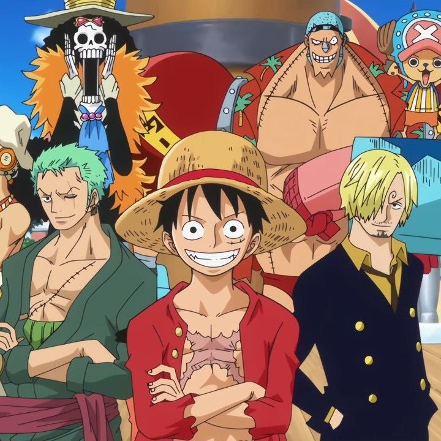
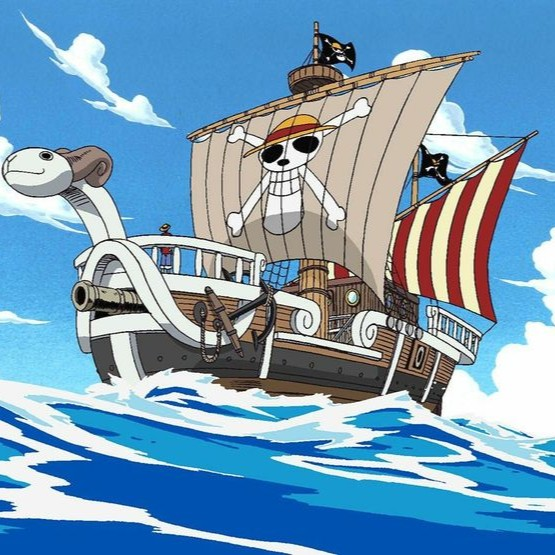

Tripulações
Conheça os bandos mais temidos dos mares e suas recompensas bilionárias.
Explore o vasto oceano em busca do One Piece. Este portal foi criado para organizar informações sobre as tripulações e mistérios do Novo Mundo de forma simples e direta.

Conheça os bandos mais temidos dos mares e suas recompensas bilionárias.
Descubra os segredos das frutas do diabo e seus usuários lendários.

Explore as embarcações icônicas que cruzaram a Red Line.